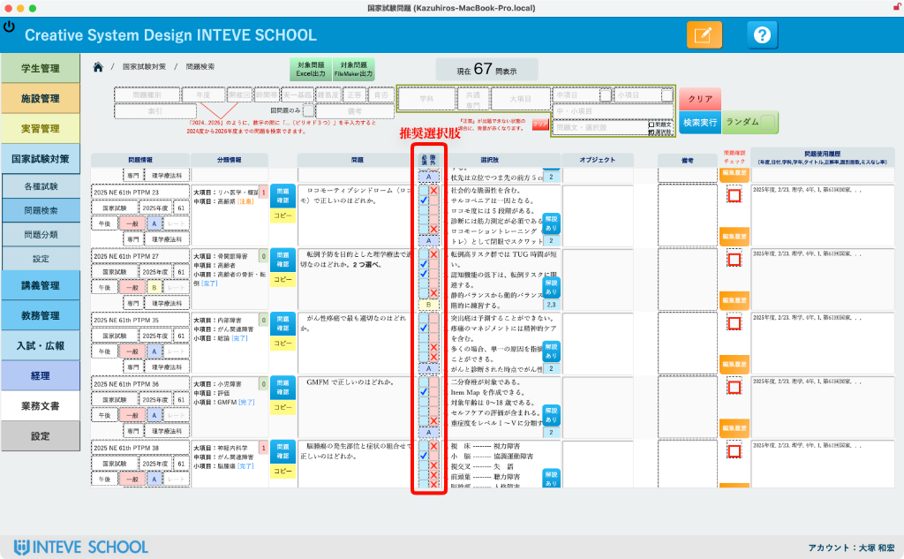
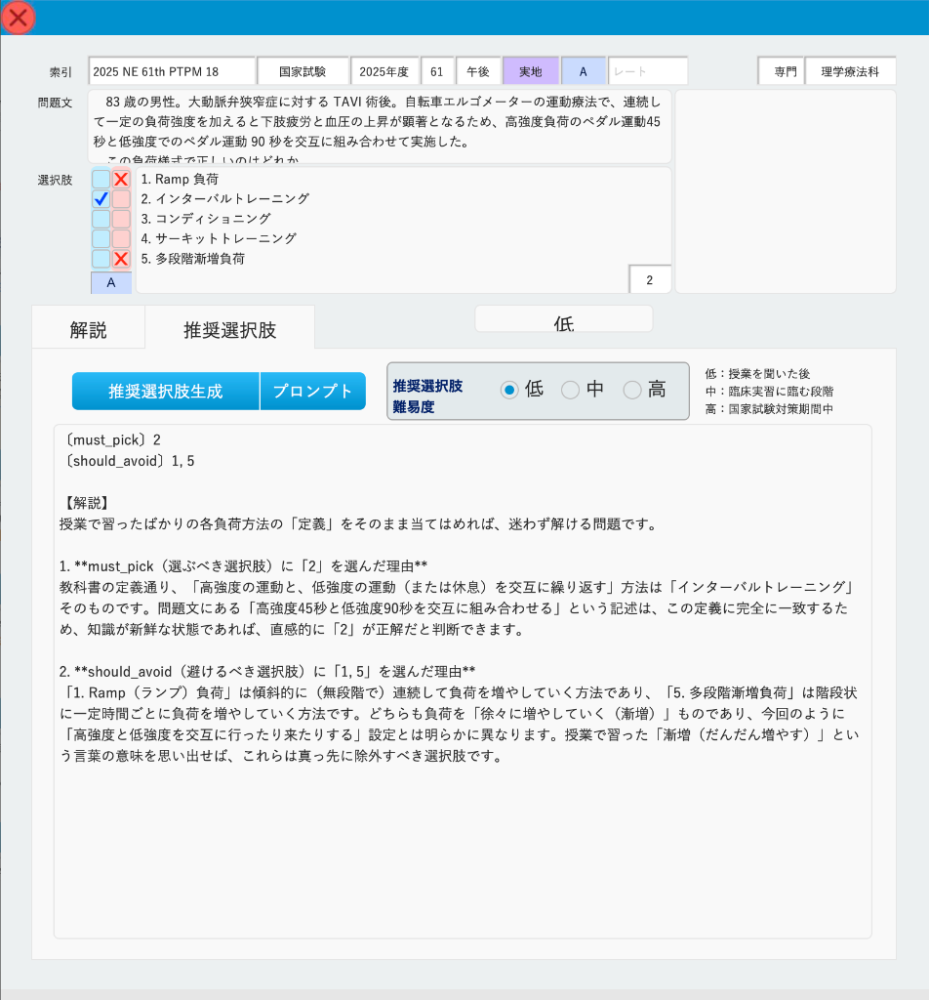
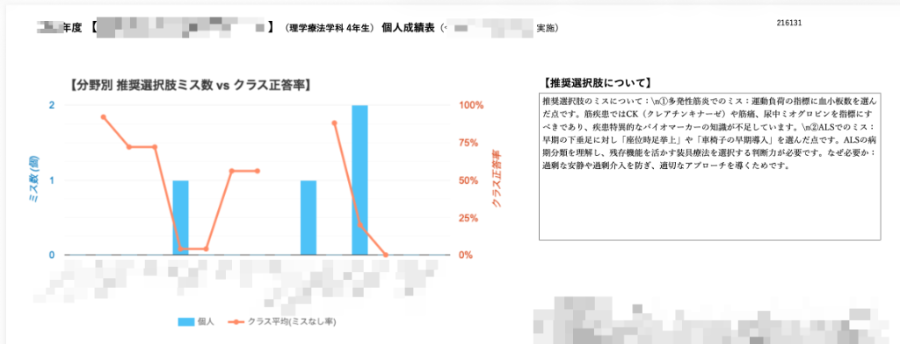
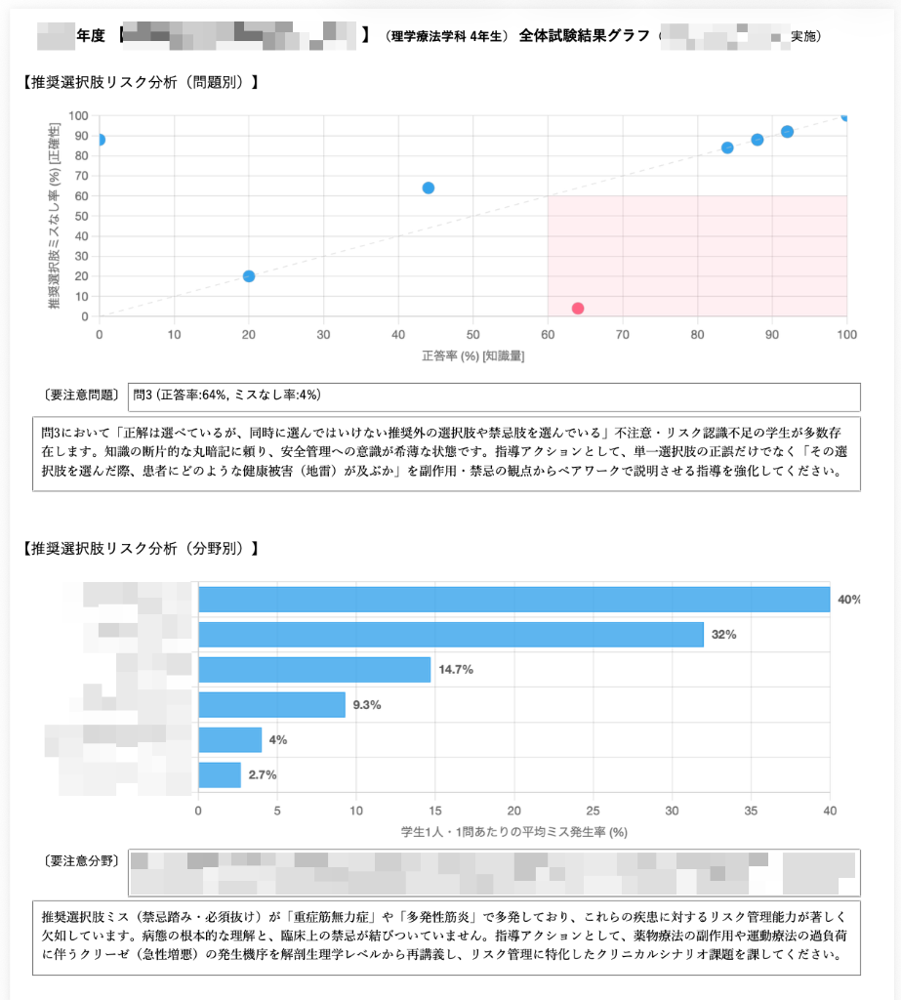

推奨選択肢リスク分析
「点数」には表れない、解き方の危険を事前検知。
出題者の意図と学生の解釈のズレを可視化し、個別指導の質を引き上げます。
なぜ従来の「〇×採点（点数）」だけでは危険なのか？
点数だけでは見落とされがちな3つの潜在リスク
国家試験対策において、模擬試験や過去問演習の正答率（点数）だけを指標にしていると、本番直前になって予想外の不合格リスクが表面化することがあります。従来の〇×採点では、以下の重要な要素が隠れてしまうためです。
たまたま正解した学生の見落とし
根拠なく消去法や勘で正解した学生は、「理解している」と判定されて補習対象から外れてしまいます。
禁忌肢・地雷選択肢の選択
臨床現場で重大事故に繋がるような危険な選択肢をあえて選んでいる危険な思考パターンを検出できません。
「教え方」と「理解」のズレ
教員が出題で意図した狙いと、学生が受け取った解釈のズレを客観的に比較・検証する手段がありません。
推奨選択肢リスク分析とは？
教員の意図と学生の思考プロセスのギャップを構造化する特許技術
1問ずつの個別設定も、AIによる一括自動生成も自由自在。
手動で1問ずつ推奨選択肢を登録できるのはもちろん、AI（Gemini API連動）が問題文と解説を解析し、「選ぶべき理由」と「除外すべき理由」の叩き台を一括自動生成。大量の試験問題でも事前の登録手間がかかりません。
- 問題検索・一覧画面で全問題の必須・除外フラグが一目瞭然
- AIが生成した解説・根拠を教員がワンクリックで確認・微調整可能


クラス全体のリスクをグラフ表示。
個人成績表へ指導アドバイスを自動反映。
クラス全体の正答率と解き方のリスクを散布図・バーグラフで直感的に可視化。分析結果は学生ごとの個人成績表にそのまま印字され、具体的な指導アクションに直結します。
- 問題別・分野別のリスク発生率を多次元グラフで俯瞰
- 個人成績表にミス傾向と克服アドバイス文章を自動生成


教員・学科が得られるメリット
国家試験対策と個別指導の精度を大幅向上
「ケアレスミス」や「曖昧な誤解」による本番での思わぬ不合格を、模擬試験の段階で未然に防ぎます。
客観データに基づいた指導ができるため、教員間での指導方針のバラつきを抑え、ペアワーク等の効果を高めます。
教員が伝えたつもりの内容と、学生が理解している内容のギャップを把握し、今後の講義方法の改善に活かせます。
推奨選択肢リスク分析に関するお問い合わせ・ご相談
貴校でご使用中の過去問や模擬試験データを利用したデモ体験・資料請求・仕様に関するご質問はこちらからお気軽にお問い合わせください。